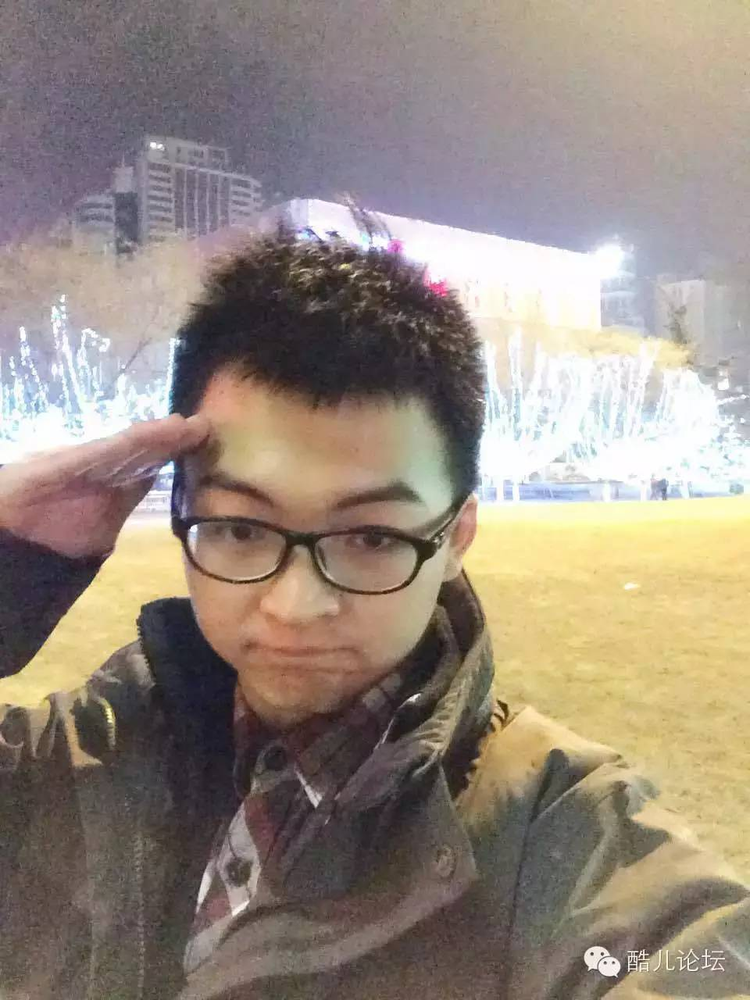
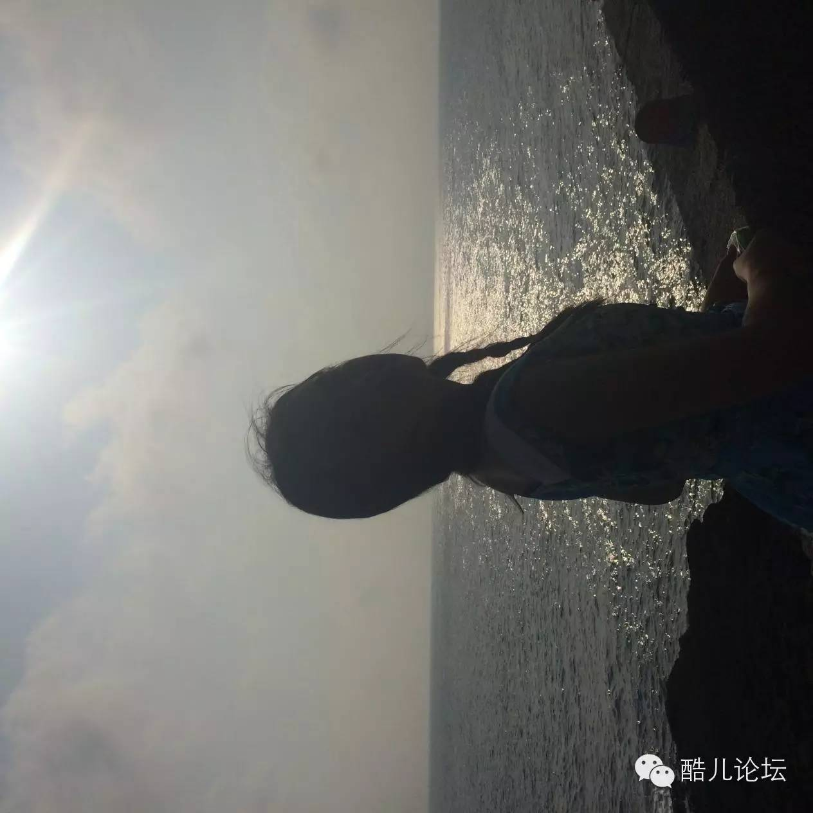

和你一起拍电影 | 微电影宣讲会（内有爆照）
去年的冒刺新年微电影《留下》就是讲述了一个发生在杭州这块我们有着复杂感情的土地的一个关于“留下/不留下”的故事。
▲2015年冒刺微电影《留下》预告片
而2014年的《此去今年》温情又感动，是冬日里懒得的阳光在同志人群里的投向。
▲2014年冒刺微电影《此去今年》预告片
▼微电影创作组成员有话要说▼
一个个颜值都好高（捂脸）
舒克│2015年《留下》 演员

我是舒克，
曾经非常有幸参加了冒刺新年趴微电影的拍摄，
好想像冰冰一样把每个镜头p掉啊，哈哈哈，
大家要好好减肥以便展示自己的。。
额。。美貌2333
布吉岛│2015《留下》 演员
我是布吉岛
这次参与微电影的拍摄还是非常曲折的
在上次新年趴第二幕拍了个开头
就因为时间问题临时取消了
于是我在里面只出现了一个瞬间
因为没有经验我对镜头的角度非常奇葩
将大饼脸彻底展露了出来
希望大家不要注意到我
现在我不在杭州上学了
这次新年趴我会尽量赶回来和大家一起臭嗨～
文文│2016《？？？（等你来定）》 演员
我是男同
想要在这里留下一些可以看到的东西
（以后翻出来看一定很棒啊哈哈哈）
而且我很（bu）可（yao）爱（lian）啊
所以想要参演（虽然毫无演技可言
琉璃│2015《留下》 演员

其实刚开始让我拍微电影我是拒绝的。你不能让我演我就演，观众们会骂我。然而站长告诉我，那个角色非常适合由我来演，我拿到剧本扫了一眼，就决定上了贼船。我惊异于自己可以毫不费力地记住那么大段的台词，更惊喜于上映后大家对我演技的一致好评。不是是因为那句“好姐妹共用一根屌”的千古名台词，而是因为这份微电影如此写实，把我们gay的悲欢离合描绘得真实贴切，所以我能自然放开自己，让自己真正入戏。剧本中描写的朋友、恋人之间的故事，在我的生活中的的确确时刻上演，焉能不让人心有戚戚。
阿咪酱│2016《？？？（等你来定）》 摄像

我是阿咪酱
我是个有点社交恐惧的直女（准确来说，是双性恋好奇）
一想到要参与微电影拍摄就好害羞
可是还是好想做那个羞羞地躲在镜头后面的人~
▼微电影宣讲会▼
11月28日（周六）下午2点
杭州同志中心
（具体地址回复“幸福在哪里”查看）
放映
《此去经年》
《留下》
两部只在新年趴放映过的电影将再次上映！
分享
导演
主创
现场分享两部微电影的酸甜苦辣
★报名★
你有什么故事可以分享？
你有经验愿意参加？
都请赶紧来报名吧！
Q&A
有疑问？
欢迎现场询问！
天气那么冷，
一起来杭州同志中心看电影吧。